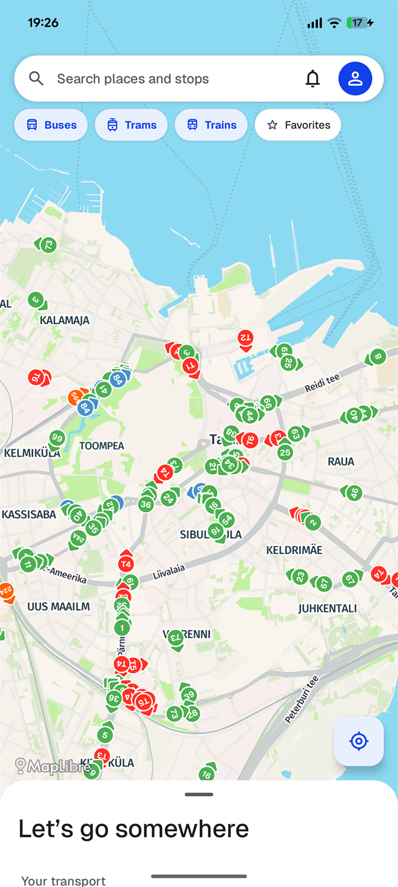
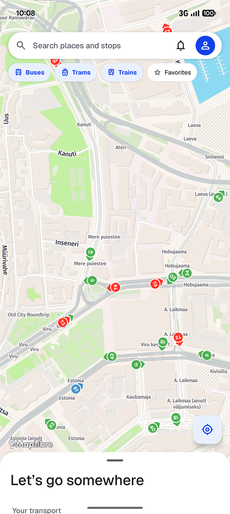
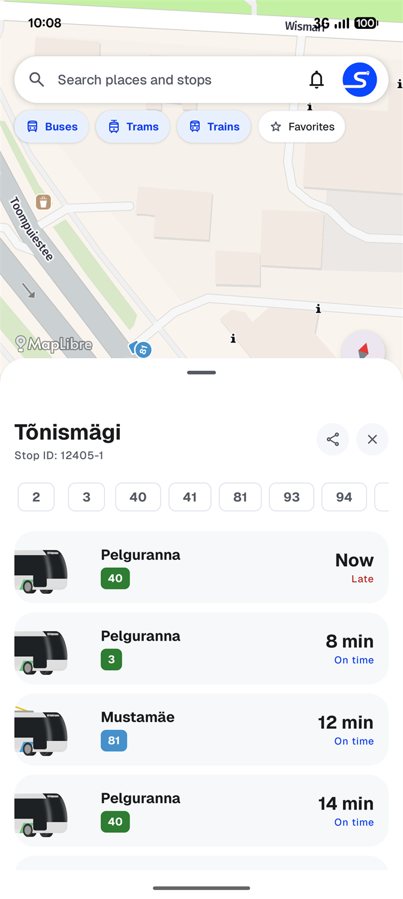
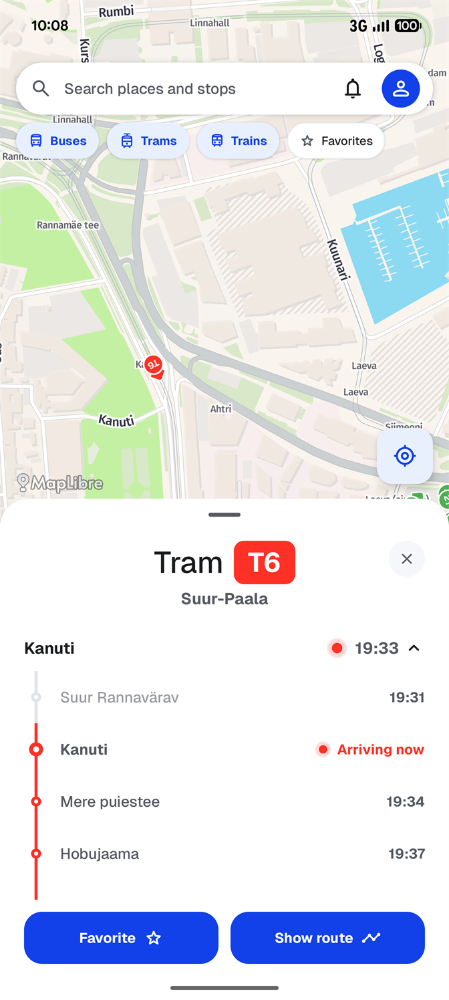
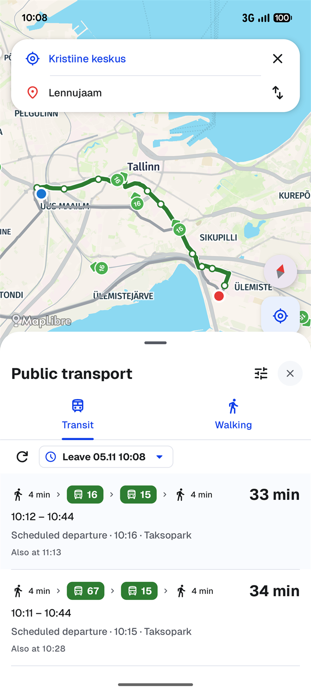

Таллин.
На остановку
впереди.
Автобусы, трамваи и не только.
Весь городской транспорт в одном простом приложении.
Для Android. Без рекламы.
Таллин, Эстония

Чуть ближе к следующей поездке.
Меньше догадок.
Больше движения.
Один взгляд перед выходом.
Сразу понятно, что скоро приедет.



Отсюда.
Туда, куда
позовёт этот день.
Выбери пункт назначения. Сравни поездки на транспорте и пешие маршруты с пересадками и временем отправления.
Построй маршрут в Strada
Независимое приложение.
Наш общий город.
Для поездок, с которыми Таллин становится твоим.
Strada — личный проект splin.dev для ежедневных поездок по Таллину. Приложение для Android без рекламы.
Информация о транспорте поступает из открытых источников, включая данные Таллина и Elron. Всегда проверяй сообщения перевозчиков об изменениях.
Написать намСледующая поездка.
Уже рядом.
Скачать в Google Play
Strada для Android. Создано для Таллина.